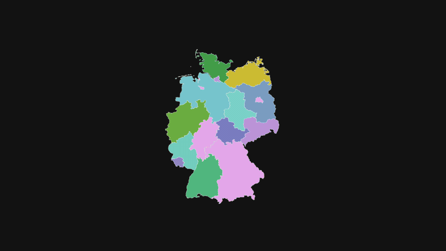
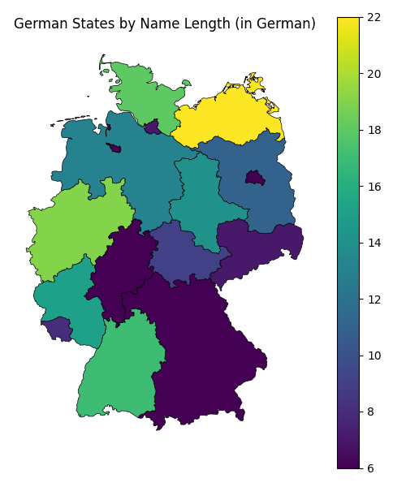
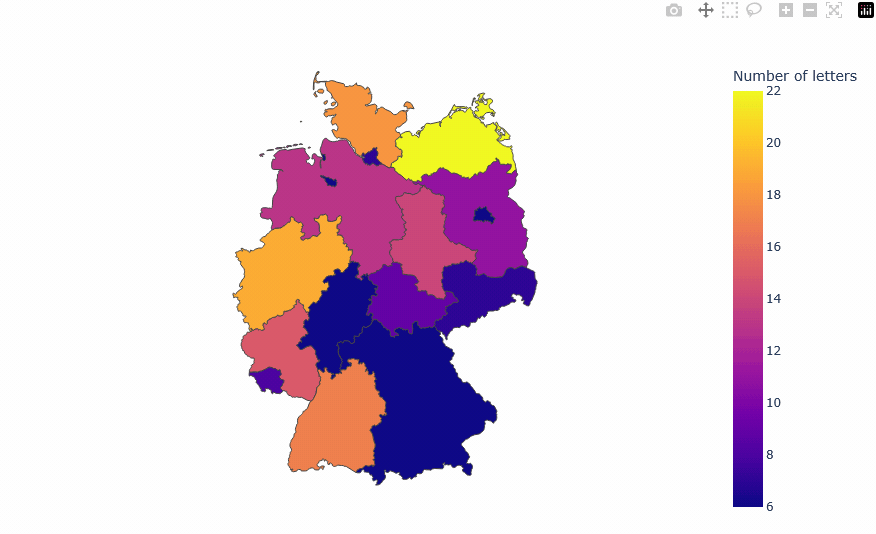

A brief walkthrough of how to plot data on a map in Python

From life expectancy1 to measures of democracy2, publications that busy people tend to read are full of colorful maps displaying all sorts of statistics. These visualizations are called choropleth maps.3 Let’s take a look at how we can plot these in Python.
Typically, you will need a GeoJSON file of the region you’re trying to visualize your data on. If you look inside a GeoJSON file, you mostly see lists and lists of coordinates that define the boundaries of whatever map you’re trying to draw. To get these files, you may need to poke around the internet for a while, find out whether the map file you downloaded can actually be used for your purposes, and, if so, under which license, and so on. From what I’ve found, SimpleMaps.com provides a wide range of maps under the CC BY 4.0 license (e.g., German states), which is good enough for me.
Prerequisites
To give you a very specific idea of what you actually need in order to plot your data on a map, let me go through an illustrative example using the German federal states map mentioned earlier. My goal in this example is to plot the number of characters each state’s name consists of. For example, Bayern is made up of 6 letters, while Baden-Württemberg consists of 16 letters and a hyphen (17 characters).
In fact, here’s the full “dataset” we’ll be using:
| name | n_chars |
|---|---|
| Sachsen | 7 |
| Bayern | 6 |
| Rheinland-Pfalz | 15 |
| Saarland | 8 |
| Schleswig-Holstein | 18 |
| Niedersachsen | 13 |
| Nordrhein-Westfalen | 19 |
| Baden-Württemberg | 17 |
| Brandenburg | 11 |
| Mecklenburg-Vorpommern | 22 |
| Bremen | 6 |
| Hamburg | 7 |
| Hessen | 6 |
| Thüringen | 9 |
| Sachsen-Anhalt | 14 |
| Berlin | 6 |
Now that we have a dataset containing our statistic and a column tying each row’s value to a geographical location, we’ll need the following:
- A GeoJSON file of federal states of Germany
- Python 3.10 or newer
- The
geopandas&matplotlibpackages for a static map, orgeopandas&plotlyfor an interactive map
(Skip to the end of the post to get the full Python script)
Load packages & data
We’ve downloaded the de.json file, placed it into our working directory, and now we want to read it using geopandas.
import geopandas as gpd
import pandas as pd
import matplotlib.pyplot as plt
import plotly.express as px
geometry = gpd.read_file("de.json")We also need to join our statistics and the map geometry into a single dataframe for convenient plotting. Naturally, the names of the regions we want to plot have to be the same in both tables.
statistics = pd.DataFrame({
"name": [
"Sachsen",
"Bayern",
"Rheinland-Pfalz",
"Saarland",
"Schleswig-Holstein",
"Niedersachsen",
"Nordrhein-Westfalen",
"Baden-Württemberg",
"Brandenburg",
"Mecklenburg-Vorpommern",
"Bremen",
"Hamburg",
"Hessen",
"Thüringen",
"Sachsen-Anhalt",
"Berlin",
],
"n_chars": [7, 6, 15, 8, 18, 13, 19, 17, 11, 22, 6, 7, 6, 9, 14, 6],
})
geometry = geometry.merge(statistics, on="name", how="inner")For both the static and interactive maps, we’ll be using the same geometry dataframe.
Static map
Let’s start with the static image using matplotlib. I included some useful defaults, such as ax.axis("off"). Feel free to change these as needed.
fig, ax = plt.subplots(1, 1, figsize=(6, 7))
ax.axis("off")
ax.set_title("German States by Name Length (in German)")
geometry.plot(column="n_chars", ax=ax, linewidth=0.5, edgecolor="k", legend=True)
fig.savefig("map_static.png")Here’s the resulting map

Interactive map
To produce the interactive map, we’ll be using plotly. The resulting choropleth map will be generated as an HTML element ready to be embedded in a website.
In this tutorial, the necessary plotly JS libraries are set up to be served from the project’s CDN. Some reports4 suggest that displaying interactive maps offline is currently not possible.
In the interactive case, there are more attributes to be set. I’ve also included a modified on-hover tooltip, and saved the map as an embeddable HTML element using full_html=False (should still be displayable using a browser).
fig = px.choropleth(
geometry,
geojson=geometry,
locations="name",
featureidkey="properties.name",
color="n_chars",
projection="mercator",
hover_data={"name": True, "n_chars": True},
width=900,
height=600,
labels={"n_chars": "Number of letters"},
)
fig.update_geos(fitbounds="locations", visible=False)
# Change the default on-hover tooltip
fig.update_traces(
hovertemplate="<b>%{customdata[0]}</b><br>"
+ "Number of letters: <b>%{customdata[1]}</b>",
customdata=geometry[["name", "n_chars"]].values,
)
fig.write_html(
"map_interactive.html",
include_plotlyjs="cdn",
full_html=False
)This code produces the following visualization (GIF below):

Conclusion
Plotting choropleth maps in Python is not difficult. Plotting beautiful choropleth maps in Python takes a bit more effort, though. My goal in this post was to show you how to get started.
Below is the full code. Save it to script.py, don’t forget to download the map file, and use uv to generate both maps by running uv run script.py.
# /// script
# dependencies = [
# "geopandas>=1.1.3",
# "matplotlib>=3.10.8",
# "plotly>=6.7.0",
# ]
# ///
import geopandas as gpd
import pandas as pd
import matplotlib.pyplot as plt
import plotly.express as px
# See https://simplemaps.com/gis/country/de
geometry = gpd.read_file("de.json")
statistics = pd.DataFrame({
"name": [
"Sachsen",
"Bayern",
"Rheinland-Pfalz",
"Saarland",
"Schleswig-Holstein",
"Niedersachsen",
"Nordrhein-Westfalen",
"Baden-Württemberg",
"Brandenburg",
"Mecklenburg-Vorpommern",
"Bremen",
"Hamburg",
"Hessen",
"Thüringen",
"Sachsen-Anhalt",
"Berlin",
],
"n_chars": [7, 6, 15, 8, 18, 13, 19, 17, 11, 22, 6, 7, 6, 9, 14, 6],
})
geometry = geometry.merge(statistics, on="name", how="inner")
#### STATIC ####
fig, ax = plt.subplots(1, 1, figsize=(6, 7))
ax.axis("off")
ax.set_title("German States by Name Length (in German)")
geometry.plot(column="n_chars", ax=ax, linewidth=0.5, edgecolor="k", legend=True)
fig.savefig("map_static.png")
#### INTERACTIVE ####
fig = px.choropleth(
geometry,
geojson=geometry,
locations="name",
featureidkey="properties.name",
color="n_chars",
projection="mercator",
hover_data={"name": True, "n_chars": True},
width=900,
height=600,
labels={"n_chars": "Number of letters"},
)
fig.update_geos(fitbounds="locations", visible=False)
fig.update_traces(
hovertemplate="<b>%{customdata[0]}</b><br>"
+ "Number of letters: <b>%{customdata[1]}</b>",
customdata=geometry[["name", "n_chars"]].values,
)
fig.write_html(
"map_interactive.html",
include_plotlyjs="cdn",
full_html=False
)